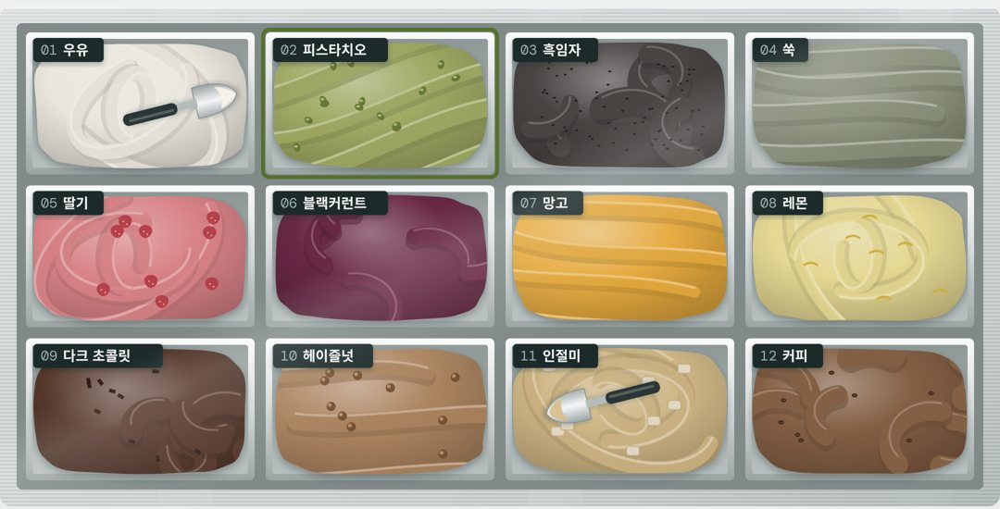
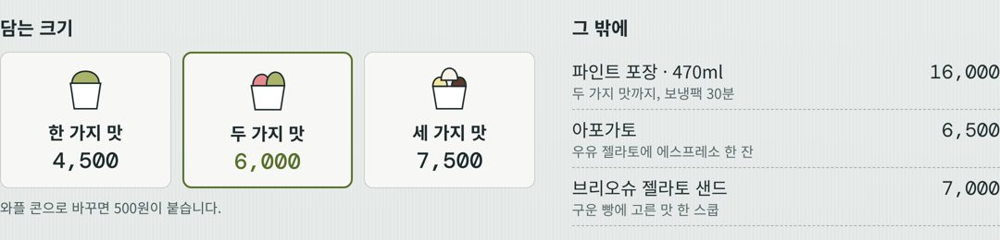

메뉴판 디자인 · SD-MN57
이 디자인으로 상담하기
녹는점 젤라테리아 아침마다 열두 가지 맛을 저어 만드는 동네 젤라토 가게
A4 세로 · 1페이지 · 한국어 · 원화스테인리스 · 우유빛 · 피스타치오 그린위에서 본 젤라토 진열장 일러스트


위에서 본 진열장손님이 유리 너머로 보는 모습 그대로 그려, 번호만 보고 바로 주문할 수 있게 했습니다.

컵 크기 세 칸스쿱 수를 그림으로 보여 주고, 기본으로 권하는 두 가지 맛 칸만 테두리를 둘렀습니다.
이 메뉴판의 구성
- 색은 스테인리스 진열장과 우유, 피스타치오에서 가져왔습니다
- 초록은 새 맛 표시와 두 가지 맛 칸에만 씁니다
- 셔벗에는 우유 없음 표시를 달아 따로 묻지 않아도 되게 했습니다
- 맛이 바뀌면 번호와 이름만 갈아 끼우면 되는 구조입니다